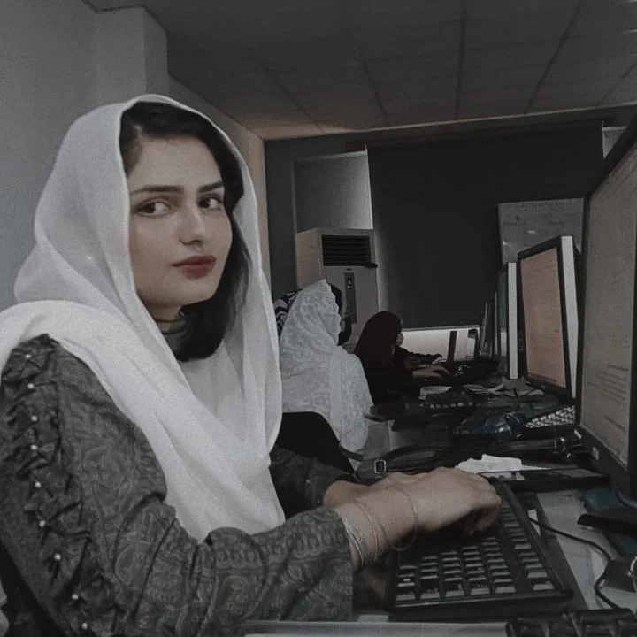

Contact Information
- Email:syedaalisha1021@gmail.com
- Phone:03379798308
Skills
- Python: Object-Oriented Programming in C and C++
- Data Structures and Algorithm
- System Programming: Windows, Ubuntu, and Kali Linux
- MATLAB
- HTML and CSS
- PROTEUS
Education
- Bachelor’s in Computer Systems Engineering, UET Peshawar (2021-2025)
CGPA: 3.78
- Intermediate - Tameer-i-wattan Public Schools and Colleges (2019-2021)
Marks Obtained: 1078 (1st position in BISE Abbottabad)
- Matriculation - Tameer-i-wattan Public Schools and Colleges (2017-2019)
Marks Obtained: 1021
Achievements
- Prime Minister's Youth Laptop Award (2023)
- 1st Position in BISE Abbottabad (2021)
- Merit Scholarship from UET Peshawar (2021-2025)
- Gold Medal Selection from BISE Abbottabad (2021)
- Scholarship from BISE Abbottabad (2021-2025)
- Umera Board Position Recognition (2021)
- Laptop Recognition by Mushtaq Ahmad Ghani (2020)
Certificates
- Certified in Machine learning from Coursera
- Certified in Python from Coursera
- Certified in Signal Onramp and MATLAB Fundamentals from Mathworks